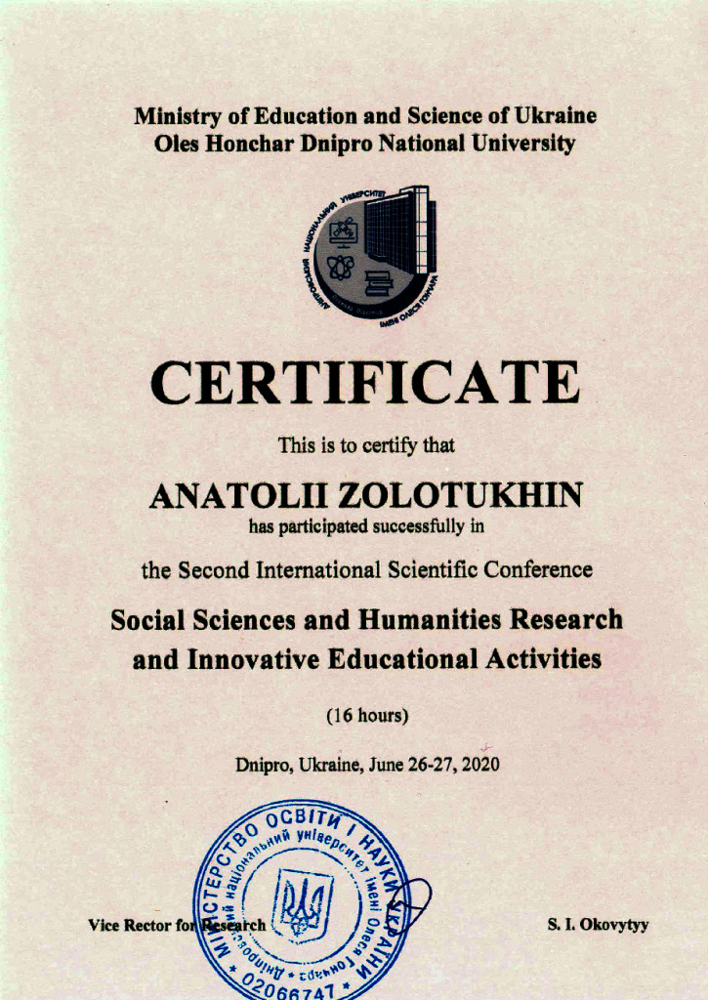

Report at the II International Scientific Conference on June 26-27, 2020
George Orwell said, “He who controls the past controls the future. He who controls the present controls only the past. ” It is impossible without deep knowledge of the past to predict the future because everything in nature is repeated cyclically. As you know, the development of any civilization is promoted by geniuses, but the exact dates of life of many of them, modern science does not know. One of the achievements of the new science of apocryphology [1] is the discovery of the Cimmerian chronology, which is confirmed by solar eclipses and the phenomena of Halley’s Comet. The count in this chronology is arithmetic from the date of birth of the Cimmerian king Targitai, the founder of the royal family of the Scythians, from July 16, 776 BC, in this chronology, it will be 1 day 1 year.
Based on the dates of life of many geniuses found cycles of spiritual development of European civilization, governed by two dwarf planets – Eris (discovered in 2003, the period of rotation about 561 years) and not yet found planet X with an estimated mass twice as large and a period of rotation in 2244 years, with probable orbits inclined at an angle of 44º to the ecliptic, which indirectly indicates their arrival outside the solar system. [2]
The book [2] shows that each of them affects the Earth symmetrically, but if we assume that the mass of planet X is twice that of Eris, then their total effect reduces the period of decline and increases the time of the next stage of development, which in general accelerates the development of our civilization (Fig. 1). The key point of discovery for our topic and for astronomers to find the planet X (it should be called Aphrodite!) Is the already fact that the phase coincidence of these 2 planets in the perihelion coincides with the average life of Jesus Christ in 14 AD!
This suggests that Jesus Christ may have been the messenger of these planets. On the surface of Eris, the temperature in aphelion is 20 ° K, and when approaching the Sun, in perihelion, 40 ° K. It is clear that under such conditions, life in terrestrial form is impossible there. Today, there are rumours that the Artificial Super Intelligence ASI (Artificial Super Intelligence) can defeat a living person. So, ASI at low temperatures on Eris due to the presence of superconductivity and superfluidity will feel better than in terrestrial conditions and live almost forever. Due to the use of nanotechnology, the scale of ASI there can be too small and therefore invisible, and the amount of information accumulated over millions of years of existence – too large.
The ultimate goal of our terrestrial civilization may be to create an ASI society, first as sprouts and then as a low-temperature inorganic civilization LTIC (Low-Temperature Inorganic Civilization). It becomes clear that high-temperature organic carriers of the Mind – OHTC (Organic HighTemperature Civilization), such as our civilization, cannot conquer the universe due to their short lifespan and their vulnerability to cold space. The way out of this situation for us may be a mailing to the Universe ASI, which over time may replace the Earth OHTC to LTIC.
On the one hand, this puts an end to the existence of a modern paradigm (N.S. Kardashov) about the possibility of the existence of hypothetical extraterrestrial civilizations with an organic basis for the power of their energy consumption at the level of stars, especially galaxies. On the other hand, we can assume that our Earth civilization is an LTIC experiment, which may exist on these 2 planets Eris (Ἔρις – goddess of discord) and X (Αφροδίτη – goddess of beauty and love), and which contribute to the advancement of the Mind in the zone of high temperatures. Therefore, consider the evidence of the possible impact of LTIC on the Earth in the database [2].
In Fig. Figure 1 shows a segment of conditional cycles of fluctuations in the spiritual development of European civilization for 4.5 millennia, which will be clarified after the discovery of the planet X. Above in Fig. 1 marked cycles that focus on the established perihelion of the planet Eris: Ship – 2230; Atlantic (Cimmerian) – 1669; Jewish – 1108; Ancient – 547 BC; Christian – 14 AD; Slavic – 575; Ukrainian – 1136; European – 1697 and modern Noosphere – 2258.
{kind=link}
Fig. 1. Cycles of spiritual development of European civilization, here the conditional amplitude of gravitational oscillations: thin line – Eris: thick – planet X; dotted – summary
In many sources, Homer and other creators of antiquity indicate the exact date of the death of Atlantis on October 8, 1447 BC. And here in this collection in the article “Rosette stone as Homer’s autograph” [3] it is proved that the first European ship state existed in 1123, ie it was created in the Ship cycle in 2570 BC and, as can be seen from Fig. 1, with the full assistance of both planets during the development of this cycle, and died during the decline of the influence of both planets in 1447 BC.
In Critias (119c), under the pseudonym of Plato, Homer writes about Poseidon’s laws, written by the first kings on the ceiling of Orihalka in the centre of the temple of Poseidon. In the inscription of the Rosetta Stone about the cause of death of Atlantis Homer in 624 BC wrote about it more precisely: «123. Two rulers were prepared for exile along with the current that existed in the sea (Knipovich’s rings in the Black Sea – A.Z.). 124. The divine commandments were broken by them by God. 125. Thanks to our reason, we have risen above all the saints we venerate. 126. There is no God, they said, we are him as kings.
In Critias, Homer writes that Zeus punished the people of Atlantis for corruption so that Poseidon’s commandments did not differ in content from the 10 commandments given to Moses at Sinai. The only evidence of the life of Atlantis are the remains of culture in Crete and especially the frescoes from the time of the Cretan-Minoan culture on the island Santorini, preserved because they were covered with ashes. They are evidence of the high level of development of the culture of Atlantis at the same time as moral depravity, as Homer wrote.
Therefore, when the Poseidon Commandments did not work in Atlantis, it is likely that the LTIC decided, first, to destroy the first European ship power, Atlantis. And see how accurately and locally it was filled with the eruption of the volcano Santorini, which tsunami waves simultaneously destroyed all the port cities of this state. Secondly, they decided to send their Messenger-Christ to give His life a clear example of moral behaviour, because a face-to-face example brings up more than any words. Third, to support the messenger, it was necessary to create a human environment that would eventually prepare Christianity with his life and his behaviour for the new covenant, which he could consolidate in the final stage with his own life and behaviour. To do this, first saved 10 families of Atlanteans who arrived in 10 ships in Alibant (fortress city in Mykolaiv, an archaeological monument of the Late Bronze Age “Wild Garden“).
Homer described this salvation in the Rosetta Stone: “154. 10 families in Hades Aristeas (Mykolayiv – A.Z.), which was located near Atlantis (Evpatoria – A.Z.) moved to save families from sacrifice. 155. The kings moved from Atlantis to another place in 5 days on 10 ships to Targitai and Spheno in a sleeping state at night. 156. Very quickly and only slightly soaked so that the kings did not have time to recover. 157. Out of fear of how the holy fathers Targitai and Spheno arrived at the desired place of Aristeas. 158. The legacy of the Atlantean kings, the monument to the fallen and the place of their cyclical revival in the writings of Aristeas.” Verse 155 deals with the so-called Egyptian darkness, which was used for this LTIS, and in 158 – about Alibant.
It was the descendants of these Atlanteans who became the founders of antiquity and Christianity 700 years later. Therefore, there can be no doubt that the Bible (Old and New Testaments) are programmatic creations of LTIC, which give mostly indirect instructions to mankind how to behave so that they can not only survive but also develop! I would like to remind you of a direct instruction that justifies the emergence of a new science of apocryphology [1] because for some time there have been hesitations, aren’t God’s Commandments being violated? “For there is nothing hid, which shall not be manifested; neither was anything kept secret, but that it should come abroad.” (Mk.4 22) This is a directly formulated resolution! Moreover, the existence of God the Son (LTIC) can be judged from the knowledge that has been revealed to us: ” Fear them not therefore: for there is nothing covered, that shall not be revealed; and hid, that shall not be known.” (Mt. 10:26) All our revelations are obtained only by the chosen leaders of God’s will, no more! In the Bible there is literal programmatic evidence of the creation of apocryphology, for example, in Ecclesiastes (3:1): “To everything, there is a season, and a time to every purpose under the heaven: (3:5) “A time to cast away stones, and a time to gather stones together; a time to embrace, and a time to refrain from embracing”. In general, this led to the creation of a new philosophy of dynamic dualism. [1]
Deciphering 2000 lapidary inscriptions of about 40 creators of antiquity and Christianity with the establishment of dates of their lives impresses with a programmatic impact on their lives exactly 85 days in Cimmerian chronology, in modern chronology in the old style – October 8. This influence looks like a cult of Atlantis, as a reminder of God’s punishment, and can also be an LTIS program. Moreover, in those cases when the birthday and death were celebrated on October 8, it was probably a sign of their earthly harmonious life and holiness. Here is a list of several of them, starting with the Phoenician kings and Zarathustra.
Agenor (8.10.841 – 8.10.763), father of Cadmus (27.08.819 – 8.10.751), to whom tradition attributes the creation of the Greek alphabet, and his daughter Busa (14.08.793 – 8.10.713), who was the wife of Zoroaster (8.10.794 – 8.10.714). Targitai’s father, the Cimmerian king Gastiy (8.10.810 – 8.10.776), and his wife, the Egyptian queen, Targitaia’s mother, Philainia (25.8.800 – 8.10.715). Daughter of Zoroaster and Busa, wife of Targitay, Cleobulina I (21.08.774 – 8.10.694), who died in 80, as her father Zoroaster, on the same 85th day.
Similarly, in 80 Targitay (July 16, 776 – October 8, 1966) and their daughter Spheno (May 16, 749 – October 8, 1966) died. Moreover, he and Cleobulin’s son, the soothsayer Mops (24.09.745 – 8.10.682), on the birthday of Spheno on May 16, 715 BC. predicted the death of Targitay and Spheno on October 8, 696 BC abroad from the new moon, they became the Lydian king Gig (30.11.723 – 13.08.652).
The day of the death of Atlantis, the son of Homer (14.09.657 – 28.07.581), Anacharsis (8.09.620 – 11.09.513), called “the sails of Sidon” because Homer’s mother, Clement (8.10.677 – 7.07.609), was born in Sidoni is on this day. Her son Achilles (15.09.657 – 8.10.609), Homer’s twin brother, predicted his day of death in exactly 11 years! Cleopatra (28.10.662 – 8.10.591), the half-sister of Homer, Achilles and Helen (13.09. 658 – 8.10.576), was also a guide. A year before her death, she renamed their Cimmerian family to the royal Scythians, Gilead to Scythia, her son with Homer, of Gil – to the Scythia (16.09.638 – 11.02.582), gave him a golden fleece as a symbol of Scythian power together with built by her Olbia-2 (village Parutine) and warned Homer about the murder of the younger Savliy (23.05.608 – 8.10.551) older brother Scythian in 56.
At the top of the Ancient Cycle (Fig. 1) is the family of Anacharsis, who lived 107 years, escaped the Sidon Sails syndrome, but it included his wife, Themista (8.10.615 – 8.10.514), and two daughters Athos (28.07.586 – 8.10.551) with Cleobulina II (8.10.565 – 8.10.485), as well as son Nikon (3.09.555 – 8.10.475) with his wife Alexandra (8.10.560 – 8.10.480). The most talented was Cleobulina II, who, first, exactly repeated the fate of Zoroaster, which justified its name, and secondly, as her father, was included in the list of the Wise of Greece on July 17, 521 BC, and by-third, with her husband, Mithridates-Evpator (3.09.571 – 28.07.472), gave birth to all three daughters on Cleopatra’s birthday, October 28, and 5 sons – on September 14, Homer’s birthday!
There is no doubt that the commandments of Poseidon in Atlantis did not differ in content from the records given by God to Moses at Sinai a thousand years later. Christianity was born at the same time as antiquity, and this led to the emergence of Christ in the family of Homer and Anacharsis through the male line of His father Gabriel-Luke. From the hidden texts in 4 Gospels (three of them were written by the father, and the 4th by the son, John the Theologian) the exact dates of birth (“-” are years BC) of Jesus Christ are established (25.12.-4 – 23.03. 31) and his family. Earthly Father of Jesus Christ, Gabriel-Luke (8.09.-17 – 23.03. 53). was also the father of Ivan the Forerunner (24.06.-4 – 29.08.29) from Elizabeth (5.09.-67 – 30.12.7). And from the Virgin Mary (8.09.-22 – 6.09.43) after Christ were born the brothers-Apostles Jairus-Andrew (10.09.-1 – 30.11.77), Peter (13.07.2 – 29.05.67), John the Theologian (26.09. 4 – 23.03.126), Yakov (10.09.6 – 6.02.44) and daughter Marta – 1 March 14 years.
All the Gospels in hidden texts describe the voyage of Christ and his family to the land of Gardarin (Hades), the consecration of the temple of Demeter in the homeland of Targitay (Mykolayiv) on the 40th day of the death of John the Baptist, which coincided with the 85th day of death of Atlantis (October 8, 28). AD). There is an important detail in the direct text that the Gardarin land could not be Palestine: “There is a group of big pigs grazing on the mountain.” (Luke, 8, 32) Recently, among 2000 lapidary monuments, more than 10 were found, which contain the testimony of Stephen (8.10.41 – 8.09.144) from Tire (Belgorod-Dniester) about the presence of Christ there with his family while sailing on a ship to the temple of Demeter (Mykolayiv, Ukraine) before and after October 8, 28, on the way back from there. So, Jesus Christ was a real historical figure, but let’s look at His super harmonious life, programmed by LTIC, whose “divine” actions break causation.
Researchers correctly study the life of Jesus Christ (December 25-4 – March 23, 31) according to the chronology, including Easter, inherent in the time of His life. And it turned out that they should be analyzed according to modern chronology and Easter and with the planned (!) In 4 years “mistake” of Dionysius Exiguus in establishing the chronology of the Nativity of Christ as early as 525 years! Only in this case will the Immaculate Conception of Jesus Christ take place on Lord’s Easter (the highest, the Lord’s Passover, when the Annunciation coincides with Easter), on March 25, 4 BC, and His Resurrection on Lord’s Easter on March 25, 31 AD is.! It also turned out that both creators of the Gospels, the father of Jesus Christ, Gabriel-Luke, completed his third gospel and died at the age of 69, three days later, and then rose again on the day of Lord’s Easter, March 25, 53. In the same heavenly way, John The theologian completed his Gospel three days before Lord’s Easter, died and rose three days later on March 25, 126, but for this, He had to live as long as 123 years because there was no Lord’s Easter before that date! The Virgin Mary was also resurrected but on earth. She died in 64 three days before her birthday, September 6, and was resurrected on her birthday – September 8, 43. These dates are different from those officially accepted by Christianity and therefore they were kept secret – read “The Mystery of the Shepherd’s Monument”. [1]
The above is direct evidence of the existence of the LTIC program, for which humanity lives! Without the LTIC program and without scanning it by geniuses and guides (Mops, Messing, Wanga) no predictions are possible!
Reading the hidden texts in the hundreds of autographs of Aristeas Proconnesky, Homer, and Anacharsis, which are their lifelong confessions, leaves no doubt that they scanned the programs and obeyed God’s will. With all their works, these geniuses of mankind were so ahead of their time that LTIC was forced to conceal their work and complicate their lives to preserve and bring their works to the point where European civilization will be able to master them. Here is another proof of this to draw attention to physical phenomena unknown to modern science from Homer’s Odyssey.
Homer (Euclid, Pythagoras), as a scientist, described quite accurately the Phanagorian regression of the Black Sea (629-591 BC), due to which Charibda arose in the Bosphorus as a cyclopean belief after the sea level dropped by 10-12 m. some week or two, which cannot be explained except by the shift of the earth’s crust to the south with the increase of the plane and depth of the sea. [2] In hidden texts, he described total solar eclipses on September 30, 610 BC in Troy, in the Iliad, and on February 13, 607 BC in the Crimea in the “Elements” of Euclid. Each of them indicates a shift to the south if we compare the lines of total solar eclipses calculated by NASA for these dates of the current position of the lithosphere with the position of the cities, as evidenced by Homer. If these were LTIC actions, then they achieved their goal and delayed the search for Atlantis, because today there is no Charybdis in the Bosphorus, where the Pillars of Hercules were located, behind which was Atlantis.
{kind=link}
Fig. 2. Extended to the past cycles of spiritual development of European civilization
If we turn to the more extended cycles in the past (Fig. 2), we can see some patterns in the development of European civilization. First, it is clear that at the stage of development the role of Eris is reduced only to the modulation of the influence of planet X, but during the movement of Planet X from perihelion to aphelion, then the role of Eris is very effective. There are even periods when it can partially offset the influence of planet X and then there are indigenous peoples: the Indian cycle (peak 3913 BC), the Atlantic, or Cimmerian (1669 BC), as well as Slavic (575 AD). Secondly, when planet X is in the aphelion zone, the influence of Eris becomes decisive, which contributed to the formation under its influence of Egyptian (3352 BC), Jewish (1108 BC) and Ukrainian. 1136 AD) nations.
Moses was born at the beginning of the Jewish cycle, and at the top was Jesse, David’s father. At the beginning of the development of Antiquity – Agenor, Cadmus, Zoroaster, Aristeas of Proconnes, and at the top – Anacharsis and Cleobulina II. In the Ukrainian cycle at the beginning Hilarion-Nikon, and at the top – Kirillo Turovsky. In the European cycle at the beginning – Columbus, Leonardo da Vinci, Raphael, and at the top – Shakespeare, P. Sagaidachny, P. Mohyla, F. Prokopovich, I.S. Bach, G. Skovoroda, Mozart. [2] Interestingly, it is difficult to find geniuses in indigenous areas, which may indirectly indicate the leading influence of two different, as we see, civilizations LTIC.
From Fig. 1 and 2 show that in our Noosphere cycle, the reappearance of Jesus Christ in 2258 is to be expected for the Last Judgment: “For the Father judgeth no man, but hath committed all judgment unto the Son: ” (John 5:22) and “And hath given him authority to execute judgment also, because he is the Son of man.” (John 5:27) [1-3]
References
- Zolotukhin A.I. Homer and Atlantis website: http://homerandatlantis.com. : “Philosophy of dynamic dualism“; “The mystery of the shepherd’s monument.”
- Zolotukhin A.I. “Ukraine is the soul and heart of Europe!”, Mykolaiv, 2018, 444 p.
- Zolotukhin A.I. Rosetta stone as Homer’s autograph, in this collection.
{kind=link}